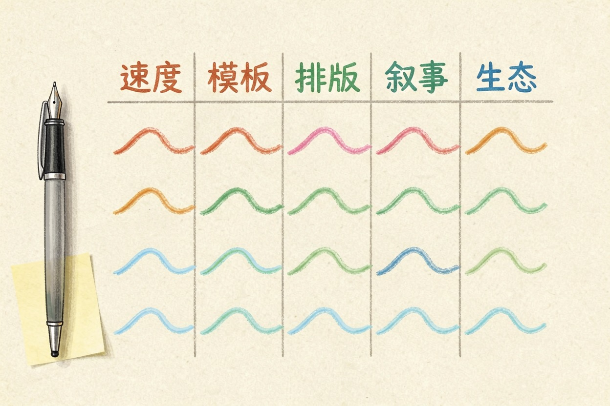
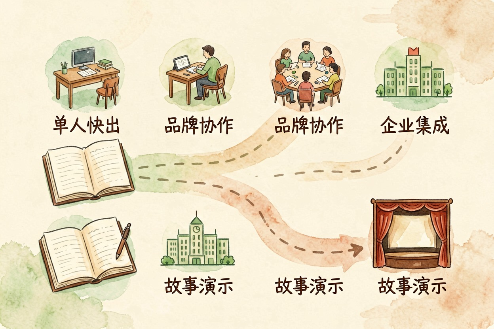
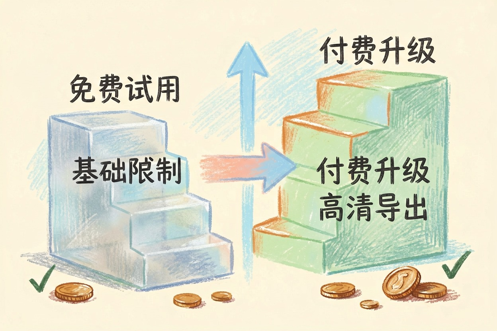

2026 最佳 AI 做 PPT 工具对比：Gamma、Canva 选购全解析
用 AI 做 PPT 已是标配。五大工具横向评测，从生成质量到定价全面对比，帮你选出最适合的方案
AI做PPT工具对比是本文的核心主题，下面详细介绍如何使用。
AI PPT 工具赛道全景

AI 做 PPT 工具对比的核心对象，包括 Gamma、Canva{:target="_blank"}、Beautiful.ai、Tome、Copilot 五大主流工具。Gamma 是速度王者，输入主题即可快速出稿，适合赶工场景。Canva 模板生态最丰富，设计审美在线，适合品牌调性要求高的用户。Beautiful.ai 主打智能排版，自动优化布局。Tome 走叙事路线，适合需要讲故事的展示场景。Copilot for PowerPoint{:target="_blank"} 深度集成微软生态，适合已用 Office{:target="_blank"} 团队。国内 WPS AI 和 Canva 中国版也可正常使用。这个赛道 2025 年爆发，工具众多，选型前先看自己的核心需求。更多参数对比可参考 AI PPT 工具详细评测。多数工具提供免费试用，先试后用更稳妥。选型时还要考虑团队人数、协作频率和已有软件生态，避免买完用不上。
## 代码说明
AI PPT 工具核心优势速查：
- Gamma：速度最快，初稿完整，适合快速出稿
- Canva：模板丰富，设计美观，适合品牌展示
- Beautiful.ai：智能排版，自动优化布局
- Tome：叙事型展示，适合讲故事场景
- Copilot：微软生态集成，PPTX 导出兼容性最好AI做PPT工具对比：核心功能横向对比

对比维度包括 AI 生成质量、模板丰富度、PPTX 导出质量、协作功能和价格。普遍反馈认为 Gamma 生成速度最快、初稿最完整。Canva 模板最多、设计最美观。Beautiful.ai 排版最智能，但模板选择少。Copilot 导出兼容性最好。定价方面，大部分工具提供免费试用，正式使用月费约 10-20 美元。团队版通常提供集中管理和品牌模板库，适合企业统一采购。选型时建议让团队核心成员各自试用一周，收集反馈后再做最终决定，避免个人偏好影响整体决策。
不同场景推荐指南

单人快速出稿，选 Gamma，输入主题几分钟即可出完整初稿。品牌团队协作，选 Canva 或 Beautiful.ai，设计调性可控。企业微软生态用户，选 Copilot for PowerPoint，无缝集成现有工作流。叙事型展示场景，选 Tome，讲故事能力突出。国内用户优先测试 WPS AI 和 Canva 中国版，国内访问更稳定。选型的关键是明确「谁用」和「做什么用」，不同角色和场景的最优解不同，不要用一个工具覆盖所有情况。如果团队已有统一的办公软件栈，优先选择与该栈集成的 AI 工具，减少切换成本。
Q: AI做PPT工具对比 免费吗？ A: 大多数工具提供基础免费额度，具体以官网当前说明为准。
AI做PPT工具对比的最佳实践见上文详细步骤，别错过核心要点。
本文信息核对于 2026-08-06。AI 产品的价格、免费额度与功能变动频繁，实际以各工具官网当前说明为准。